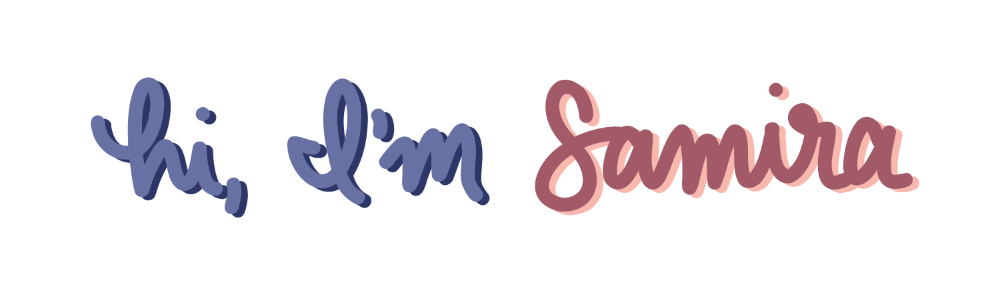
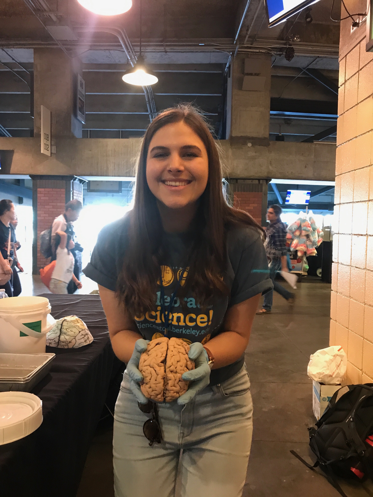

I'm a 4th-year PhD candidate in the Helen Wills Neuroscience Institute at UC Berkeley studying aging and neuroanatomy in the Jagust Lab and the Cognitive Neuroanatomy (Weiner) Lab. My PhD work investigates how individual differences in sulcal anatomy affect cognitive and pathological aging trajectories.
Previously, I majored in Cognitive Science and minored in Bioengineering at UC Berkeley; I was a research associate in the Neuroecon Lab, where I worked on several projects focused on aging and decision-making. I was an Amgen Scholar at Columbia University, where I studied hippocampal circuitry in a mouse model of Alzheimer's disease.
I'm also interested in science education; I'm a campus Steering Committee Member and the Neuroscience Team Lead for Bay Area Scientists Inspiring Students (BASIS), a program that provides free, in-class science lessons to local elementary schools. I have also taught neuroscience and neuroanatomy lessons and demos at the Bay Area Science Festival (BASF) Discovery Days and the California Cognitive Science Conference. Outside the lab, I enjoy spending my free time making art, baking, reading, and exploring Bay Area nature.
UC Berkeley, Helen Wills Neuroscience Institute (HWNI)
PhD student, Neuroscience (Fall 2020–)
UC Berkeley, College of Letters and Sciences
B.A. Cognitive Science, Bioengineering Minor (May 2020): Highest Distinction in General Scholarship & High Honors in Cognitive Science
Best Poster Award, Alzheimer's Imaging Consortium: Alzheimer’s Association International Conference (2023)
Honorable Mention, Ford Foundation Predoctoral Fellowship (2021)
Honorable Mention, NSF Graduate Research Fellowships Program (GRFP) (2020, 2021)
Departmental Citation Award, UC Berkeley Cognitive Science: represents the highest achievement by the top graduating student in the department (2020)
Summer Undergraduate Research Fellowship (SURF), UC Berkeley L&S Sciences (2019)
Diversity Research Award, Scientific Research Network on Decision Neuroscience and Aging (2019)
Amgen Scholars Fellowship, Columbia University (2018)
The Leadership Award, Cal Alumni Association (2016, 2019): merit-based scholarship recognizing students who demonstrate innovative, initiative-driven leadership
Ph.D. Thesis Research: Jagust Lab & Cognitive Neuroanatomy (Weiner) Lab, UC Berkeley HWNI (May 2021 - present)
Ph.D. Rotation Projects:, UC Berkeley HWNI (Aug 2020 - May 2021)
Neuroecon (Hsu) Lab, UC Berkeley (2018-2020)
Dranovsky Lab, Columbia University (2018): Amgen Scholars Fellowship
Adesnik Lab, UC Berkeley (2017-2018)
Publications
Presentations
*Co-first author
Co-Instructor, Psych 298: Quantitative Analysis and Coding Knowledge (2023)
Graduate Student Instructor, Molecular & Cell Biology C61: Foundational Neuroscience (2023)
Graduate Student Instructor, Public Health 129: The Aging Human Brain (2021)
Lab Teaching Assistant, Data 8: Foundations of Data Science,(2017)
HWNI PhD Program Steering Committee (2023-): One of 2 student representatives of the Committee, which oversees program operation and updates
HWNI Diversity, Equity, & Inclusion Committee (2020-2021): Organized DE&I trainings for the first-year curriculum and broader neuroscience community; applied for grants to fund research programs for students from minority-serving institutions; organized application workshop for prospective applicants
HWNI Bootcamp Committee (2021-2022): (2021) Planned first-year Neuroscience Bootcamp events and activities (labs, lectures, socials, etc.); (2022) developed hands-on cognitive neuroscience lab lesson (introduction to brain imaging analysis methods and human neuroanatomy)
HWNI Recruitment Committee (2020-): Planned recruitment and interview events for PhD admissions
Community Resources for Science (CRS), Steering Committee Member & Team Leader (2020-)
Workshop Developer and Leader, UC Berkeley Expanding Your Horizons (EYH) Conference (2023-)
Project SHORT, Mentor (2021-)
Picking Brains, Co-Creator and Graphic Designer (2020-2021): created interview series that highlights the stories of professors in neuroscience to normalize different backgrounds and journeys
Cognitive Science Student Association (CSSA), President (2019-2020); Vice President (2018-2019); Secretary (2017-2018)
CSSA outreach program:
CS Kickstart, participant (2016) and organizer (2017): organized computer science bootcamp and support program for first-year undergraduate women interested in the field